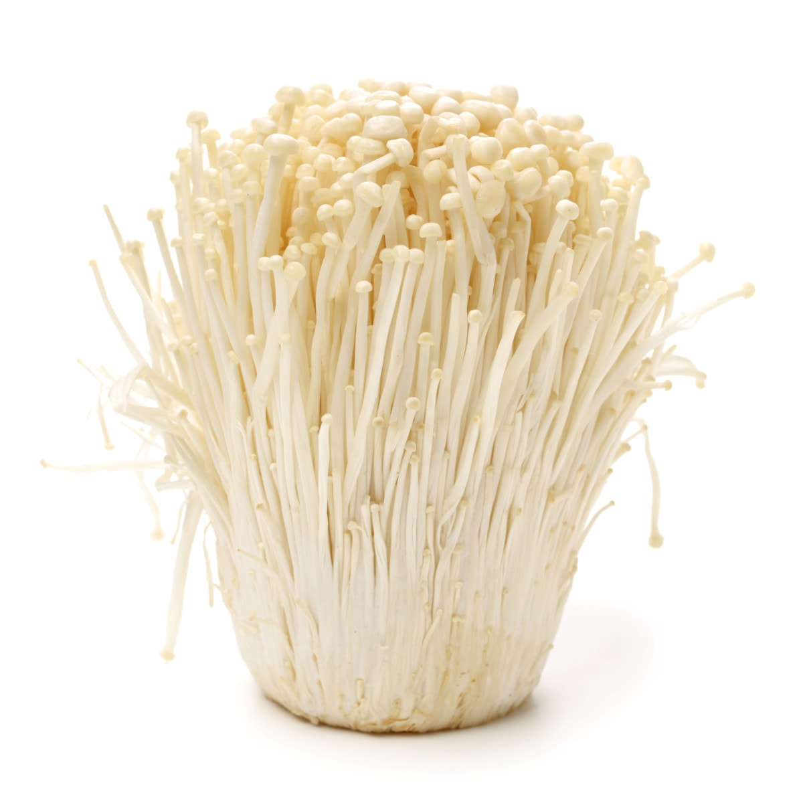

- 
-
Enoki Mushroom
$30.95
When picking it in the wild, it is important not to confuse it with the poisonous Galerina marginata. Flammulina velutipes can be distinguished by its shiny and sticky caps, white spores, and the absence of a ring on the stem. Galerina marginata presents brown caps and stipe and most notably has brown, rusty spores. It also tends to grow isolated and it presents a ring. Commercially farmed enoki is a long, thin white mushroom and is a popular ingredient for soups, especially in East Asian cuisine, but can be used for salads and other dishes. The mushroom has a crisp texture and can be refrigerated for approximately one week. The farmed form is also known as golden needle mushroom, futu mushroom or lily mushroom. The farmed F. velutipes is sold both fresh and canned.
Add to cart